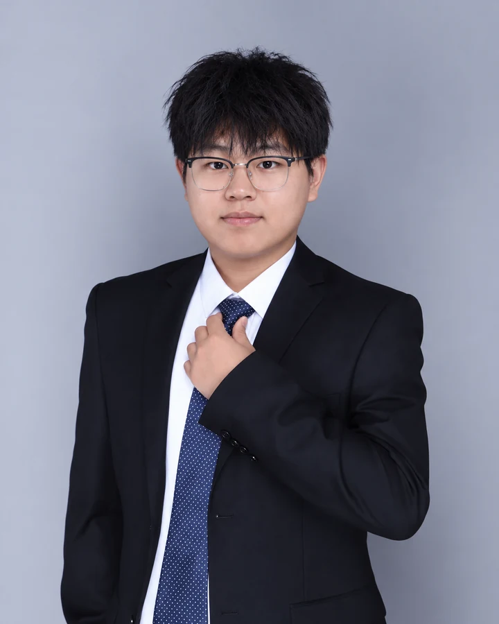

01 / LEARNING
脉冲学习与时序计算
研究脉冲网络的训练与时间表示，通过替代梯度、多尺度编码和稀疏计算，理解有限时间窗内的学习与推理。
ICML 2026博士研究生 · 西安电子科技大学
人工智能学院
智能科学与技术博士研究生
类脑计算 · 雷达与信号智能 · 半导体器件
我的研究围绕脉冲神经网络的学习与时序计算展开，并关注雷达信号智能处理及半导体器件与神经形态硬件设计。研究从算法机制、实际信号任务与器件建模三个层面推进。

01 / LEARNING
研究脉冲网络的训练与时间表示，通过替代梯度、多尺度编码和稀疏计算，理解有限时间窗内的学习与推理。
ICML 202602 / SIGNALS
面向混合脉冲流与复杂时序信号，研究雷达分选、去交织和识别，结合无监督学习、相似性结构与事件驱动表示。
ICASSP 202603 / DEVICE
结合器件物理、TCAD 与数据建模研究功率器件设计；同时关注神经形态器件模型、神经元阵列与跨层设计问题。
Applied Physics Letters 2026学习机制、信号处理与器件研究中的代表工作。
根据膜电位分布动态调节替代梯度函数，让 SNN 训练中的梯度传播更稳定、更高效。
把自组织映射的无监督聚类过程放进脉冲域，用 BMU 放电率完成雷达脉冲序列去交织。
用自适应聚类生成伪标签，再用相似性学习判断簇间关系，提升复杂场景雷达信号分选鲁棒性。
在 GaN-on-Si HEMT 漏侧引入 PZT 高介电常数沟槽，通过介电边界调控缓解电场拥挤，提高代表器件的耐压并改善动态导通电阻表现。
将 CNN 预测模型与遗传算法结合，用 TCAD 数据驱动多浮空埋层 LDMOS 的击穿电压优化。